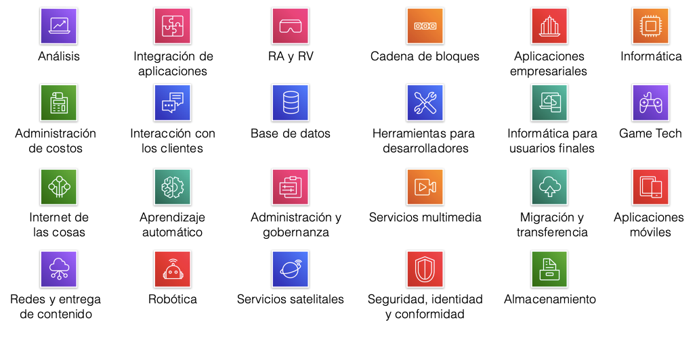
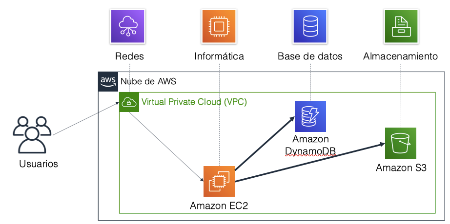
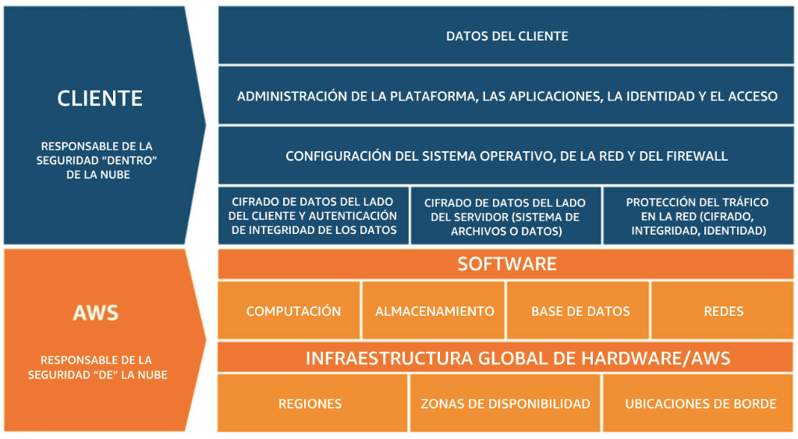

Amazon Web Services¶
Amazon Web Services ofrece un conjunto de servicios que funcionan a modo de piezas de un puzzle, de manera que uniendo unos con otros podemos diseñar la arquitectura necesaria para nuestras aplicaciones.
Servicios¶
Los servicios de AWS se clasifican en categorías:

Servicios y regiones
Los servicios y los productos de AWS se encuentran disponibles por región, por lo que es posible que dependiendo de la región a la que accedamos no veamos todos los servicios. Para obtener una lista de los servicios de AWS ofrecidos por región, podemos consultar la Lista de servicios regionales.
A continuación vamos a comentar las categorías más importantes junto a algunos de sus servicios más destacados:
Almacenamiento¶
Los servicios que ofrece AWS para gestionar el almacenamiento de datos son:
- Amazon Simple Storage Service (Amazon S3): servicio de almacenamiento de objetos que ofrece escalabilidad, disponibilidad de datos (ofrece una durabilidad del 99.999999999%), seguridad y rendimiento. Se utiliza para almacenar y proteger cualquier cantidad de datos para sitios web, aplicaciones móviles, copias de seguridad y restauración, archivado, aplicaciones empresariales, dispositivos de Internet de las cosas (IoT) y en nuestro caso, como Data Lake para analítica de datos.
- Amazon Simple Storage Service Glacier (Amazon S3 Glacier): es un tipo de almacenamiento S3 seguro, duradero y de muy bajo coste para archivar datos y realizar copias de seguridad a largo plazo. Está diseñado para ofrecer una durabilidad del 99,999999999% y proporcionar capacidades integrales de seguridad y conformidad que permiten cumplir requisitos normativos estrictos.
- Amazon Elastic Block Store (Amazon EBS): almacenamiento en bloques de alto rendimiento diseñado para utilizarse con Amazon EC2 para cargas de trabajo que hacen un uso intensivo de transacciones y de rendimiento. Cada volumen EBS se replica automáticamente dentro de su AZ para prevenir fallos de hardware y ofrece alta disponibilidad y durabilidad. Se utiliza para una amplia gama de cargas de trabajo que requieren un rendimiento con baja latencia, como bases de datos relacionales y no relacionales, aplicaciones empresariales, aplicaciones en contenedores, motores de análisis de bigdata, sistemas de archivos y flujos de trabajo multimedia.
- Amazon Elastic File System (Amazon EFS): proporciona un sistema de ficheros NFS elástico, escalable y completamente administrado para utilizarlo tanto con los servicios cloud de AWS como con los recursos on-premise. Diseñado para escalar a petabytes bajo demanda, aumenta y reduce su tamaño automáticamente a medida que se agregan y eliminan archivos. Reduce la necesidad de aprovisionar y administrar capacidad para admitir el crecimiento.
Estos servicios los veremos en mayor profundidad en la sesión Almacenamiento en AWS.
Informática / Computación¶
Los servicios que ofrece AWS relativos a la informática o computación son:
- Amazon Elastic Compute Cloud (Amazon EC2): proporciona capacidad informática de tamaño ajustable (de forma elástica, tanto hacia arriba como hacia abajo) en forma de máquinas virtuales en la nube en cuestión de minutos.
- Amazon EC2 Auto Scaling: permite agregar o eliminar automáticamente instancias EC2 de acuerdo con las condiciones que defina.
- Amazon Elastic Beanstalk: servicio para desplegar y escalar aplicaciones y/o servicios web desarrolladas en Java / PHP / Python en servidores web conocidos, como Apache, Nginx, Passenger o IIS.
- AWS Lambda: permite ejecutar código sin necesidad de aprovisionar ni administrador servidores (serverless). Se sube el código fuente a ejecutar, y AWS se encarga de ejecutarlo y escalarlo conforme necesite. Sólo se paga por el tiempo de computación (cuando el código no se ejecuta, no se paga nada).
Estos servicios los veremos en mayor profundidad en la sesión Computación en AWS.
Los servicios que están relacionado con el uso de contenedores son:
- Amazon Elastic Container Service (Amazon ECS): servicio de organización de contenedores altamente escalable y de gran rendimiento (permite lanzar miles de contenedores en segundos), compatible con los contenedores Docker. Mantiene y escala la flota de nodos que ejecutan los contenedores eliminando la complejidad de poner en marcha la infraestructura.
- Amazon Fargate: motor para ECS que permite ejecutar contenedores sin tener que administrar servidores ni clústeres.
- Amazon EC2 Container Registry (Amazon ECR): registro de contenedores Docker completamente administrado que facilita las tareas de almacenamiento, administración e implementación de imágenes de contenedores Docker.
- Amazon Elastic Kubernetes Service (Amazon EKS): facilita la implementación, administración y el escalado de aplicaciones en contenedores que utilizan Kubernetes dentro de AWS.
Bases de Datos¶
Los servicios que ofrece AWS para gestionar los datos son:
- Amazon Relational Database Service (Amazon RDS): facilita las tareas de configuración, operación y escalado de una base de datos relacional en la nube. El servicio ofrece capacidad de tamaño ajustable al mismo tiempo que automatiza tareas administrativas que demandan mucho tiempo, como el aprovisionamiento de hardware, la configuración de bases de datos, la implementación de parches y la creación de copias de seguridad
- Amazon Aurora: es una base de datos relacional compatible con MySQL/MariaDB y PostgreSQL. Amazon vende que es hasta cinco veces más rápida que las bases de datos MySQL estándar y tres veces más rápida que las bases de datos PostgreSQL estándar.
- Amazon DynamoDB: es una base de datos de documentos y clave-valor que ofrece un rendimiento de milisegundos de un solo dígito a cualquier escala, con seguridad integrada, copias de seguridad y restauración, y almacenamiento en caché en memoria.
- Amazon Redshift: es un servicio de datawarehouse que permite ejecutar consultas analíticas de petabytes de datos almacenados localmente en Amazon Redshift, además de ejecutar consultas analíticas de exabytes de datos almacenados en Amazon S3 de forma directa. Ofrece un rendimiento rápido a cualquier escala.
Estos servicios los veremos en mayor profundidad en la sesión Datos en AWS.
Redes¶
Los servicios que ofrece AWS para gestionar las redes son:
- Amazon Virtual Private Cloud (Amazon VPC): permite aprovisionar secciones aisladas de forma lógica de la nube de AWS.
- Elastic Load Balancing: distribuye automáticamente el tráfico entrante de las aplicaciones en varios destinos, tales como instancias de Amazon EC2, contenedores, direcciones IP y funciones Lambda.
- Amazon CloudFront: servicio rápido de red de entrega de contenido (CDN) que suministra datos, videos, aplicaciones y APIs de manera segura a clientes de todo el mundo, con baja latencia y altas velocidades de transferencia.
- AWS Transit Gateway: servicio que permite a los clientes conectar sus nubes privadas virtuales de Amazon (VPC) y sus redes en las instalaciones (on-premise) a un único gateway.
- Amazon Route 53: servicio web de DNS escalable y en la nube diseñado para direccionar a los usuarios finales a las aplicaciones de Internet de una forma confiable.
- AWS Global Accelerator: utiliza las ubicaciones de borde para encontrar la ruta óptima a la región donde reside nuestra aplicación (haciendo uso tanto de protocolos HTTP como TCP/UDP).
- AWS Direct Connect: ofrece una manera de establecer una conexión de red privada dedicada desde un centro de datos u oficina a AWS, lo que puede reducir los costes de red y aumentar el rendimiento del ancho de banda.
- AWS VPN: proporciona un túnel privado seguro desde una red o dispositivo a la red global de AWS.
Seguridad en AWS¶
Los servicios que ofrece AWS para gestionar la seguridad, identidad y conformidad son:
- AWS Identity and Access Management (IAM): le permite administrar el acceso a los recursos y servicios de AWS de manera segura. Con IAM, puede crear y administrar usuarios y grupos de AWS. Puede utilizar los permisos de IAM para permitir y denegar el acceso de usuarios y grupos a los recursos de AWS.
- AWS Organizations: permite restringir los servicios y acciones autorizadas en sus cuentas.
- Amazon Cognito facilita incorporar control de acceso, inscripción e inicio de sesión de usuarios a sus aplicaciones web y móviles.
- AWS Artifact proporciona acceso bajo demanda a los informes de seguridad y conformidad de AWS y a los acuerdos en línea.
- AWS Key Management Service (AWS KMS): permite crear y administrar claves de acceso. Puede utilizar AWS KMS para controlar el uso del cifrado en una amplia gama de servicios de AWS y en sus aplicaciones.
- AWS Shield: es un servicio administrado de protección contra ataques de denegación de servicio distribuidos (DDoS) que protege las aplicaciones que se ejecutan en AWS.
Servicios de administración de costes¶
Los servicios que ofrece AWS para administrar los costes son:
- Informe de uso y coste de AWS contiene el conjunto más completo de datos de uso y gasto de AWS disponibles e incluye metadatos adicionales sobre los servicios, los precios y las reservas de AWS.
- Presupuestos de AWS facilita la definición de presupuestos personalizados que generarán una alerta cuando los costes o el uso superen, o se prevé que superen, el importe presupuestado.
- AWS Cost Explorer cuenta con una interfaz sencilla que permite visualizar, comprender y administrar los costes y el uso de AWS a lo largo del tiempo.
Administración y gobernanza de datos¶
La consola de administración de AWS proporciona una interfaz de usuario basada en la web que permite obtener acceso a su cuenta de AWS.
Los servicios que ofrece AWS para administrar y gobernar los datos son:
- AWS Config: proporciona un servicio que facilita realizar un seguimiento del inventario de recursos y sus cambios.
- AWS CloudTrail: realiza un seguimiento de la actividad de los usuarios y del uso de la API. Esto significa que cada vez que alguien carga datos, ejecuta código, crea una instancia EC2, cambia un tipo de unidad S3 o cualquier otra acción que se pueda realizar en AWS, CloudTrail lo registrará. Esto resulta muy útil por razones de seguridad para que los administradores puedan saber quién está utilizando su cuenta y qué están haciendo. Si algo sale mal o si surge un problema de seguridad, CloudTrail será la mejor prueba para averiguar lo ocurrido.
- Amazon CloudWatch: permite monitorizar recursos y aplicaciones. Si CloudTrail monitoriza personas, CloudWatch monitoriza servicios. CloudWatch es perfecto para asegurar de que los servicios de la nube funcionan sin problemas y no utilizan más o menos recursos de los esperados, lo que es importante para el seguimiento del presupuesto. CloudWatch es excelente para asegurarse de que todos los recursos están funcionando, lo que puede resultar complicado si una gran empresa utiliza cientos de máquinas y unidades diferentes. Para ello, se pueden pueden configurar alertas para que se lancen cuando una métrica alcanza un límite específico.
- AWS Auto Scaling: ofrece características que permiten escalar varios recursos para satisfacer la demanda.
- Interfaz de línea de comandos de AWS (AWS CLI) proporciona una herramienta unificada para administrar los servicios de AWS.
- AWS TrustedAdvisor: proporciona consejos para optimizar el rendimiento y la seguridad.
- AWS Well-Architected Tool: ayuda a revisar y mejorar las cargas de trabajo.
Por ejemplo, haciendo usos de esos servicios se puede mostrar una solución sencilla:

Redes en AWS¶
Suponemos que los conceptos de red, subred y dirección IP y el modelo de la OSI están claros.
Dentro de AWS se utiliza el método CIDR para describir redes, por ejemplo, 192.0.2.0/24 (los primeros 24 bits son estáticos, y los últimos 8 flexibles). Cabe destacar que AWS reserva las primeras cuatro direcciones IP y la última dirección IP de cada subred para fines de redes internas. Por ejemplo, una subred / 28 tendría 16 direcciones IP disponibles. De ahí hay que restar las 5 IP reservadas por AWS para obtener 11 direcciones IP para nuestro uso dentro de la subred.
Muchos de los conceptos de redes físicas son válidos para las redes cloud, con la ventaja que en la nube nos ahorraremos gran parte de la complejidad.
Amazon VPC¶
AWS utiliza las VPC (Amazon Virtual Private Cloud) como redes privadas virtuales donde están conectados todos los recursos con los que trabajamos, de manera que el acceso queda aislado de otros usuarios. Dicho de otro modo, Amazon VPC permite lanzar recursos de AWS en la red virtual que definamos. Esta red virtual se asemeja en gran medida a una red tradicional que ejecutaríamos en nuestro propio centro de datos, con los beneficios de utilizar la infraestructura escalable de AWS, pudiendo crear una VPC que abarque varias AZ.
Al definir la red virtual podemos seleccionar nuestro propio intervalo de direcciones IP, crear subredes y configurar las tablas de enrutamiento y gateways de red. También podemos colocar el backend (servidores de aplicaciones o de bases de datos) en una subred privada sin acceso a Internet público. Finalmente, podemos añadir varias capas de seguridad, como grupos de seguridad y listas de control de acceso a la red (ACL de red), para ayudar a controlar el acceso a las instancias de EC2 en cada subred.
Sin entrar en mayor detalle, ya que se sale del ámbito del curso, vamos a repasar algunos de los componentes más importantes:
-
Un gateway de Internet (IGW) es un componente de la VPC que permite la comunicación entre instancias de la VPC e Internet. Un caso específico es un Gateway NAT, que se utiliza para proporcionar conectividad a Internet a instancias EC2 en las subredes privadas.
-
Después de crear una VPC, podemos agregar subredes. Cada subred está ubicada por completo dentro de una zona de disponibilidad y no puede abarcar otras zonas. Si el tráfico de una subred se direcciona a una gateway de Internet, la subred recibe el nombre de subred pública. Si una subred no dispone de una ruta a la gateway de Internet, recibe el nombre de subred privada. Para que las subredes privadas puedan conectarse a Internet dirigiendo el tráfico al gateway NAT hemos de configurar las tablas enrutamiento.
-
Una tabla de enrutamiento contiene un conjunto de reglas llamadas rutas que se utilizan para determinar el destino del tráfico de red. Cada subred de una VPC debe estar asociada a una tabla de enrutamiento, que es la que controla el direccionamiento de la subred. Las reglas de las tablas de enrutamiento se colocan de más a menos restrictivas. Tienen una ruta local integrada, la cual no se puede eliminar. Las rutas adicionales se agregan a la tabla.
-
Aunque lo veremos en el siguiente apartado, las VPC utilizan un grupo de seguridad, que actúa como un firewall virtual. Cuando se lanza una instancia, se asocia uno o varios grupos de seguridad a ella. Los grupos de seguridad tienen reglas que controlan el tráfico de entrada y de salida de las instancias, las cuales podemos modificar. Los grupos de seguridad predeterminados deniegan todo el tráfico de entrada y permiten todo el tráfico de salida.
VPC Wizard¶
Cada vez que vayamos a crear un recurso en AWS nos va a preguntar en qué VPC queremos desplegar la solución. Siempre hay una VPC predeterminada. Muchas de las configuraciones se pueden realizar mediante el asistente de VPC Wizard, el cual facilita la creación de arquitecturas de red válidas para soluciones cloud e híbridas.
Como podemos ver en el imagen, el asistente nos ofrece 4 modelos de redes:
- VPC con un única subred pública
- VPC con subredes públicas y privadas
- VPC con subredes públicas y privadas y acceso VPN a hardware on-premise
- VPC con un única subred privada solo accesible via VPN con hardware on-premise.
Si elegimos el primero, podemos ver que la información a completar se reduce al bloque de direcciones (se suele dejar el bloque por defecto) y un nombre para la VPC.
Una vez creada ya podemos modificar la configuración DHCP, la tabla de enrutamiento o los permisos via ACL, crear subredes sobre la propia VPC, etc...
Redes y subredes
Mientras que las VPC pertenecen a una única región de AWS y pueden abarcar varias zonas de disponibilidad, las subredes pertenecen a una única zona de disponibilidad.
IP Elástica¶
Una IP elástica es una dirección IP pública que AWS reserva para que la podamos asignar a una instancia para poder acceder a ella a través de internet de forma fija. Normalmente salvo que decidamos hacer una estructura de red más compleja, mediante un VPC personalizado, en realidad AWS da una IP al azar a nuestras instancias al arrancarlas. La diferencia es que si le asignamos una IP elástica ya quedará fija entre reinicios, especialmente útil si nuestra máquina aloja un dominio. También es muy útil para poder reasignar instancias y otros recursos en caso de fallo, de manera que podamos desconectar la ip elástica de la instancia y asociarla a otra para redirigir el tráfico de red.
Para evitar el acaparamiento de direcciones IP, AWS cobra 0,005€ por cada hora y dirección IP elástica que tengamos reservada sin asignar a ninguna instancia. Sin embargo, su uso es gratuito si la tenemos asignadas a una instancia o recurso en ejecución.
De manera predeterminada, todas las cuentas de AWS están limitadas a cinco IP elásticas por región, aunque se puede solicitar un aumento del límite.
Más información en https://docs.aws.amazon.com/es_es/AWSEC2/latest/UserGuide/elastic-ip-addresses-eip.html
Seguridad en la Nube¶
La capacidad de proteger la integridad y la confidencialidad de los datos es esencial. Un agujero de seguridad puede tirar a la basura todo nuestro trabajo y hacer perder a la empresa el prestigio y muchísimo dinero.
Modelo de responsabilidad compartida de AWS¶
La seguridad es una característica que tiene una responsabilidad compartida entre AWS y el cliente. Este modelo de responsabilidad compartida está diseñado para minimizar la carga operativa del cliente, pero aún así sigue siendo responsable de algunos aspectos de la seguridad general.

Responsabilidad de AWS¶
AWS es responsable de proteger la infraestructura en la que se ejecutan todos los servicios ofrecidos por la nube de AWS (en algunas preguntas de la certificación se refieren a ellos por servicios de la nube):
- Seguridad física de los centros de datos con acceso controlado basado en las necesidades en instalaciones sin identificación, con guardias de seguridad permanentes, autenticación de dos factores, revisión y registro de accesos, videovigilancia, y destrucción y desmagnetización de discos.
- Infraestructura de hardware, como servidores, dispositivos de almacenamiento y otros dispositivos de los que dependen los servicios de AWS.
- Infraestructura de software, que aloja sistemas operativos, aplicaciones de servicios y software de virtualización.
- Infraestructura de red, como routers, conmutadores, balanceadores de carga, firewalls y cableado. AWS también monitoriza la red en límites externos, protege los puntos de acceso y proporciona infraestructura redundante con detección de intrusiones de forma constante
Responsabilidad del cliente¶
El cliente es responsable del cifrado de los datos en reposo y los datos en tránsito, de todo lo que se pone en la nube. Los pasos de seguridad que debe tomar dependerán de los servicios que utilice y de la complejidad del sistema.
Si entramos en más detalle, es responsable de:
- El sistema operativo de la instancia de Amazon EC2: incluidas las actualizaciones, los parches de seguridad y su mantenimiento.
- La protección de las aplicaciones que se lanzan en los recursos AWS: contraseñas, acceso basado en roles, etc.
- Configuración del grupo de seguridad.
- SO o firewalls basados en host: incluidos los sistemas de detección o prevención de intrusiones.
- Configuraciones de red.
- Administración de cuentas: Configuración de inicio de sesión y credenciales para cada usuario.
Respecto al contenido crítico, el cliente es responsable de administrar:
- El contenido que elige almacenar en AWS.
- Los servicios de AWS que se utilizan con el contenido.
- En qué país se almacena ese contenido.
- El formato y la estructura de ese contenido y si está enmascarado, cifrado o es anónimo.
- Quién tiene acceso a ese contenido y cómo se conceden, administran y revocan esos derechos de acceso.
AWS IAM¶
AWS Identity and Access Management (IAM) permite administrar el acceso a los recursos de AWS (de informática, almacenamiento, base de datos, ...).
Una sola cuenta de AWS puede tener servicios administrados por decenas de personas diferentes que pueden estar en distintos departamentos u oficinas, tener diferentes responsabilidades o niveles de antigüedad, e incluso estar en distintos países. Para mantener un entorno seguro en la nube con todas estas variables en cuestión, es esencial seguir las prácticas recomendadas de IAM.
IAM se puede utilizar para gestionar la autenticación y para especificar y aplicar políticas de autorización para especificar qué usuarios pueden obtener acceso a cada servicio. Es decir, permite definir quién, a qué y cómo se accede a los recursos AWS.
Los principales componentes son:
- Usuario: persona o aplicación que se puede autenticar en AWS. Cada usuario debe tener un nombre único (sin espacios en el nombre) dentro de la cuenta de AWS y un conjunto de credenciales de seguridad que no se comparte con otros usuarios. Estas credenciales son diferentes de las credenciales de seguridad de usuario raíz de la cuenta de AWS. Cada usuario está definido en una única cuenta de AWS.
- Grupo: conjunto de usuarios de IAM, a los que se les concede una autorización idéntica. Así pues, permite asociar las mismas políticas a varios usuarios de una manera sencilla. Hay que tener en cuenta que:
- Un grupo puede contener muchos usuarios y un usuario puede pertenecer a varios grupos.
- Un grupo solo puede contener usuarios y, a su vez, un grupo no puede contener otros grupos.
- No hay ningún grupo predeterminado que incluya automáticamente a todos los usuarios de la cuenta de AWS.
- Política de IAM: documento que define permisos para determinar lo que los usuarios pueden hacer en la cuenta de AWS. Una política normalmente concede acceso a recursos determinados y especifica lo que el usuario puede hacer con esos recursos, aunque también pueden denegar explícitamente el acceso.
- Rol: herramienta para conceder acceso temporal a recursos de AWS específicos de una cuenta de AWS. Un rol de IAM puede tener asociadas políticas de permisos y se puede utilizar para delegar acceso temporal a usuarios o aplicaciones. Dicho de otro modo, un rol de IAM es similar a un usuario, ya que es una identidad de AWS con políticas de permisos que establecen qué puede hacer o no la identidad en AWS. Sin embargo, en lugar de estar asociada únicamente a una persona, el objetivo es que pueda asignarse un rol a cualquier persona que lo necesite.
También es conveniente destacar que cuando se asume un rol, se proporcionan credenciales de seguridad temporales para la sesión de rol, de manera que es conveniente utilizar roles para delegar el acceso a usuarios, aplicaciones o servicios que normalmente no tendrían acceso a los recursos de AWS. Veremos el uso de roles en la configuración de la creación de instancias EC2.
Consejo
Es recomendable crear una cuenta de usuario IAM por separado con privilegios administrativos en lugar de utilizar el usuario de la cuenta raíz.
Autenticación¶
Cuando se define un usuario de IAM se indica qué tipo de acceso puede utilizar el usuario para obtener acceso a los recursos de AWS:
- acceso mediante programación: mediante email y clave de acceso secreta cuando realice una llamada a la API de AWS mediante la CLI de AWS, el SDK de AWS o cualquier otra herramienta de desarrollo.
- acceso a la consola de administración de AWS: mediante usuario / contraseña más el ID/alias de cuenta. Es recomendable activar MFA (Multi-Factor Authentication) para añadir una capa más de seguridad.
- acceso mediante ambos tipos
Autorización¶
Una vez que el usuario se ha autenticado, se ha de determinar qué permisos debe concederse a un usuario, servicio o aplicación.
De forma predeterminada, los usuarios de IAM no tienen permiso para obtener acceso a los recursos o los datos en una cuenta de AWS. En su lugar, debe conceder permisos de forma explícita a un usuario, grupo o rol mediante la creación de una política de IAM, ya que por defecto, se denegarán todas las acciones que no se hayan permitido explícitamente.
Consejo
Seguir el principio de mínimo privilegio: conceder únicamente los privilegios de usuario mínimos que necesita el usuario.
El alcance de las configuraciones del servicio de IAM es global, se aplican en todas las regiones de AWS.
Políticas IAM¶

Una política de IAM es una instrucción formal mediante un documento JSON con los permisos que se concederá a una entidad. Las entidades incluyen usuarios, grupos, roles o recursos.
Las políticas especifican cuáles son las acciones permitidas, cuáles son los recursos a los que estas tienen permiso y cuál será el efecto cuando el usuario solicite acceso a los recursos.
Info
Una sola política se puede asociar a varias entidades. Una sola entidad puede tener varias políticas asociadas a ella.
Hay dos tipos de políticas de IAM:
-
políticas basadas en identidad: controlan qué acciones puede realizar dicha identidad, en qué recursos y en qué condiciones. A su vez se dividen en administradas (asociada a varios usuarios/grupos/roles) o insertadas (un único usuario/grupo/rol).
-
políticas basadas en recursos: son documentos de política JSON que se asocian a un recurso (por ejemplo, un bucket de S3). Estas políticas controlan qué acciones puede realizar una entidad principal especificada en dicho recurso y en qué condiciones. Destacar que no todos los servicios de AWS soportan este tipo de políticas.
Políticas y permisos¶
El usuario solo podrá realizar la acción si la acción solicitada no está denegada de forma explícita y además está permitida de forma explícita.
Cuando IAM determina si se concede un permiso, primero comprueba la existencia de cualquier política de denegación explícita aplicable. Si no existe ninguna denegación explícita, comprueba si existe alguna política de permisos explícitos aplicable. Si no existe una política de denegación explícita ni de permiso explícito, IAM vuelve a la forma predeterminada, que consiste en denegar el acceso. Este proceso se denomina denegación implícita.
Otros servicios relacionados con la seguridad
- AWS Organizations: Permite configurar los permisos de una organización que contiene varias cuentas de usuario en unidades organizativas (UO), y unificar tanto la seguridad como la facturación
- AWS Key Management Service (AWS KMS): servicio que permite crear y administrar claves de cifrado
- Amazon Cognito: permite controlar el acceso a recursos de AWS desde aplicaciones con una credencial única mediante SAML.
- AWS Shield: servicio administrado de protección contra ataques de denegación de servicio distribuidos (DDoS) que protege las aplicaciones ejecutadas en AWS.
Prácticas recomendadas¶
- Proteger las claves de acceso de usuario raíz de la cuenta de AWS.
- Crear usuarios individuales de IAM.
- Utilizar grupos de usuarios para asignar permisos a los usuarios de IAM.
- Conceder menos privilegios.
- Comenzar a utilizar los permisos con las políticas administradas de AWS.
- Validar las políticas que hayamos creado.
- Utilizar políticas administradas (se pueden asignar a varias identidades) por el cliente en lugar de políticas en integradas (sólo existen en una identidad de IAM).
- Utilizar los niveles de acceso para revisar los permisos de IAM.
- Configurar una política de contraseñas seguras para los usuarios.
- Habilitar la autenticación multifactor (MFA).
- Utilizar roles para aplicaciones que se ejecutan en instancias de Amazon EC2.
- Utilizar roles para delegar permisos.
- No compartir claves de acceso.
- Cambiar las credenciales regularmente.
- Eliminar credenciales innecesarias.
- Utilizar las condiciones de la política para obtener mayor seguridad.
- Supervisar la actividad de nuestra cuenta de AWS.
AWS CLI¶
AWS permite el acceso mediante la consola para administrar todos los servicios.
Primero hemos de instalar la herramienta AWS CLI que facilita la administración de los productos de AWS desde un terminal.
Antes de continuar, comprueba que no tengas una versión antigua instalada:
aws --version
Nos centraremos en su versión 2, la cual es la más reciente.
Versión 2
Si tienes instalada la versión 1, es recomendable desinstalarla e instalar la versión 2.
Para su instalación, dependiendo del sistema operativo que utilicemos, tenemos diferentes instaladores en https://docs.aws.amazon.com/es_es/cli/latest/userguide/getting-started-install.html
El siguiente paso será validarse en AWS. Para ello, desde nuestra consola del curso Leaner Labs , tras arrancar el laboratorio, pulsaremos (1) en la opción AWS Details, y posteriormente veremos los datos de acceso temporales al pulsar (2) en Show de la opción AWS CLI:
Esos datos los podemos pegar en el archivo ~/.aws/credentials o exportarlos como variables de entorno (es importante poner el nombre de las claves en mayúsculas):
export AWS_ACCESS_KEY_ID=ASDFEJEMPLO
export AWS_SECRET_ACCESS_KEY=asdfClaveEjemplo
export AWS_SESSION_TOKEN=asdfr...<resto del token de seguridad>
aws configure
Otra forma de configurar estos valores es mediante el comando aws configure, el cual nos preguntará los siguientes datos:
AWS Access Key ID [****************6YUJ]:
AWS Secret Access Key [****************4TEz]:
Default region name [us-east-1]:
Default output format [None]:
El problema es que no nos solicita el token de sesión, por lo cual sólo lo podemos utilizar si tenemos una cuenta real de AWS.
Orden
Al ejecutar comandos AWS CLI, AWS CLI buscará las credenciales primero en las variables de entorno y, a continuación, en el archivo de configuración.
Para comprobar que todo ha ido bien, mediante aws sts get-caller-identity podremos ver nuestro id de usuario.
Una vez configurado nuestro usuario, mediante aws ec2 describe-instances podremos obtener información sobre nuestras instancias.
AWS Cloudshell¶
Es un shell integrado en la consola web que facilita la gestión, exploración e interacción con los recursos AWS. Al acceder ya estaremos pre-autenticados con las credencias de la consola, y la mayoría de herramientas operacionales ya están pre-instaladas, con lo que es entrar y ponerse a trabajar.
De esta manera podemos trabajar con AWS CLI con solo entrar a nuestro usuario de AWS.
Referencias¶
Actividades¶
- (RA5075.2 / CE5.2a / 1p) Realiza el módulo 3 (Información general sobre la infraestructura global de AWS) del curso ACF de AWS.
- (RA5075.2 / CE5.2a / 1p) Instala en tu ordenador AWS CLI y conéctate a AWS desde el terminal. Realiza una captura donde se vea los datos de ejecutar
aws sts get-caller-identity.